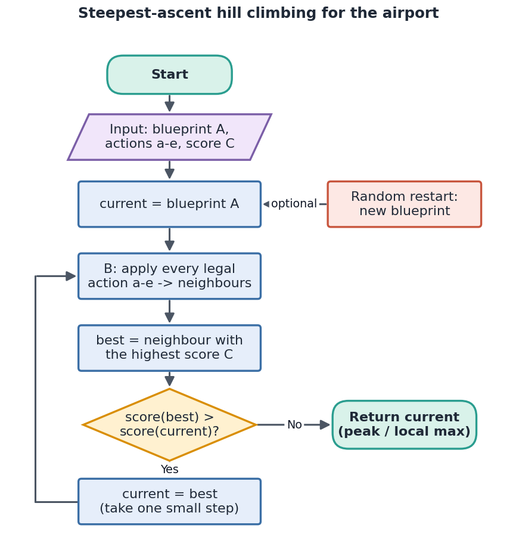
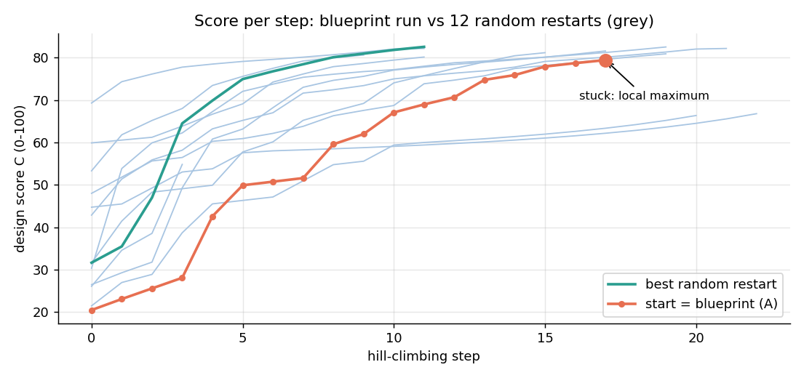
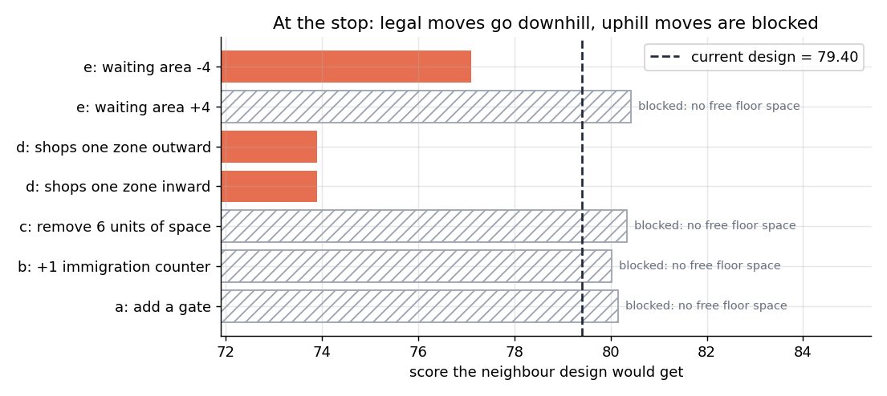
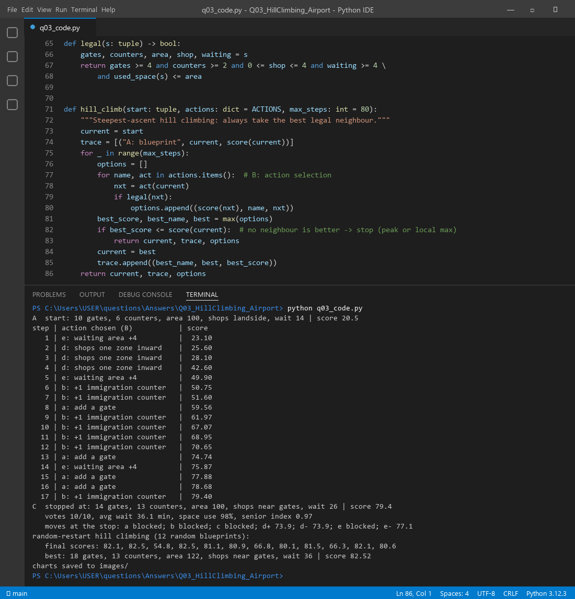

Creative Thinking for AI & IoT Innovations · Mid-Semester Question Bank
Q3. Hill Climbing for Airport Design and Gate Arrangement
Question. Airport authorities use hill climbing to improve an airport design. The start is
the blueprint of an airport in another city. The goal is judged by votes of ten frequent travellers, average waiting time,
use of space and senior-citizen friendliness. Neighbours come only from small changes: (a) add a gate, (b) add one
immigration counter, (c) remove unnecessary space, (d) move one shop, (e) grow or shrink the waiting area. Write pseudocode,
explain how the algorithm works here (A start state, B action selection, C goal state), and discuss the limitations and the
local maxima.
1. The idea in plain words
Hill climbing is like walking uphill in fog. You only see the ground next to you, so you take the step that goes up the
most, and you stop when every step goes down. Here, each "position" is one airport design. Each step is one small change
from the list a–e, and "height" is the design score. The algorithm is cheap and simple, but it can stop on a small
hill and believe it is the top.
2. Assumptions
A design is a vector: (gates, immigration counters, built area, shop zone, waiting-area units).
Floor space: a gate needs 3 units, a counter 1.5, the waiting area 1 unit per unit, and shops/toilets a fixed 12.
The design is legal only if all of this fits inside the built area.
Peak demand needs about 18 gates and 12 counters. Idle gates or counters do not count as "used" space.
Each of the 10 travellers has their own priorities (short wait, seats, shops near the gates, short immigration queue)
and votes "yes" if the design pleases them enough.
3. A, B and C in this scenario
Part
Meaning here
A. Start state
Blueprint copied from another city: 10 gates, 6 counters, area 100, shops landside,
waiting area 14. Score 20.5.
B. Action selection
Make every neighbour with one legal small change (a: +1 gate; b: +1 counter;
c: remove 6 units of space; d: move shops one zone in or out; e: waiting area ±4). Score them all and pick the
best one (steepest ascent).
C. Goal state
The design with the highest score, where no small change improves it any more.
Score C (0–100) = 100 × (0.30·votes/10 + 0.30·wait score + 0.15·space use + 0.25·senior index)
Average wait (min) = 6 + 260/gates + 150/counters (no gain beyond 14 counters) + crowding, where crowding = 0.9 × (1.6·gates − waiting area)
if there are too few seats. Wait score = (50 − wait)/40, clipped to 0–1.
Space use = floor actually busy at peak / built area.
Senior index = seats per gate, shops close to the seating, short queues, and a small penalty for very long walks (more than 16 gates).
4. How the algorithm works here (step by step)
Load blueprint A and compute its score.
Build all neighbours by applying each action a–e once. Throw away the ones that do not fit the floor space.
Score every neighbour and keep the best one.
If the best neighbour scores higher than the current design, move to it and go back to step 2.
If not, stop. The current design is a peak, but it may be only a local peak.
Optionally, restart from new random blueprints and keep the best final design (random-restart hill climbing).

Figure 1. Flowchart of steepest-ascent hill climbing for the airport.
5. Pseudocode
function HillClimbAirport(blueprint):
current ← blueprint # A: start stateloop:
neighbours ← { }
for each action in {a: +gate, b: +counter, c: -space, d: move shop, e: ±waiting}:
n ← apply(action, current) # B: action selectionif fits_floor_space(n): neighbours.add(n)
best ← neighbour with the highest Score(n)
if Score(best) ≤ Score(current):
return current # C: peak (maybe a local maximum)
current ← best
function Score(d):
return 100 × (0.30·votes(d)/10 + 0.30·wait_score(d) + 0.15·space_use(d) + 0.25·senior(d))
6. Worked example (real run)
Starting from blueprint A (score 20.5), the algorithm made 17 uphill steps. The steps are grouped here into phases:
Steps
Changes chosen (B)
Score after
What happened
1–4
waiting area +4, shops moved inward 3 times
42.60
cheap comfort fixes win first
5
waiting area +4
49.90
more seats for passengers
6–12
6 immigration counters, 1 gate
70.65
immigration queue was the bottleneck
13–16
3 gates, waiting area +4
78.68
gates and seats grow together
17
+1 counter
79.40
floor is now full, so it stops
The final design has 14 gates, 13 counters, area 100, shops near the gates and waiting area 26. It gets 10/10 votes,
an average wait of 36.1 min, 98% space use and a senior index of 0.97.

Figure 2. Score after each step. Orange: the blueprint run. Grey: 12 random restarts. Green: the best restart.
7. What are the local maxima in this case?
A local maximum is a design where every legal small change lowers the score, even though a better design exists
elsewhere. Our run ends at exactly such a point, at 79.40:
The blueprint's building has only 100 units of floor. Once gates, counters and seats fill it (99.5 units used),
adding a gate, a counter or more seats no longer fits. Those uphill moves are blocked.
The only legal moves are moving the shops (score 73.9) or shrinking the waiting area (77.1). Both go downhill, so
hill climbing stops.
Actions a–e can only remove space, never add it. The climber is trapped by the blueprint's footprint.
Random restarts show the bigger picture. Final scores were 82.1, 82.5, 54.8, 82.5, 81.1, 80.9, 66.8, 80.1, 81.5,
66.3, 82.1 and 80.6. The best one (18 gates, 13 counters, area 122, waiting area 36) reaches 82.52. That is
higher than our 79.40, so 79.40 is a local maximum. The runs stuck at 54.8, 66.8 and 66.3 are other, lower local maxima.

Figure 3. At the stop, the legal moves go down and the uphill moves are blocked by the lack of floor space.
Other airport-style local maxima are easy to imagine. One example: seats are tuned perfectly for 14 gates, so adding
one gate creates crowding. It only pays off if gates and seats grow together, which is a ridge that
single-step moves cannot climb. Another example is a plateau: moving a shop between two zones that travellers rate
the same changes nothing, so the climber cannot tell which way to go.
8. Limitations in this case
Blueprint bias: starting from another city's airport fixes the footprint and the traffic assumptions, which may not match this city.
Local maxima, ridges and plateaus: the method stops at the first peak, needs two changes at once to climb a
ridge, and gets no direction on a plateau.
Noisy, subjective goal: 10 travellers is a tiny sample, so votes can flip with one opinion.
Costly evaluation: real waiting times need simulation for every neighbour.
No memory or backtracking: once it moves, it never reconsiders an earlier choice.
Small actions only: big ideas like a new terminal wing can never appear (Q4 adds such actions).
Fixes: random restarts (different blueprints), simulated annealing (accept a few downhill steps
early on), tabu lists, compound moves (gate + seats together), or a larger action space.
9. Code and real run
q03_code.py builds the score model, runs steepest-ascent hill climbing from the blueprint and from 12 random
blueprints, and draws the charts.

Figure 4. The legality check and the hill-climbing function (lines 65–86), with the real terminal output.
10. Summary
Hill climbing improves the copied blueprint (A) one legal small change at a time (B), always taking
the best neighbour, until no change helps (C). It took the score from 20.5 to 79.40 in 17 steps. It then got stuck,
because the old building was full and actions a–e can only remove space. Random restarts found 82.52, which proves
the stop was a local maximum. Restarts, annealing or bigger moves are needed to reach the true best design.
Files in this folder: q03_code.py (source), q03_code.ipynb (Colab/Jupyter version, already run),
q03_output.txt (console output), images/ (all figures).